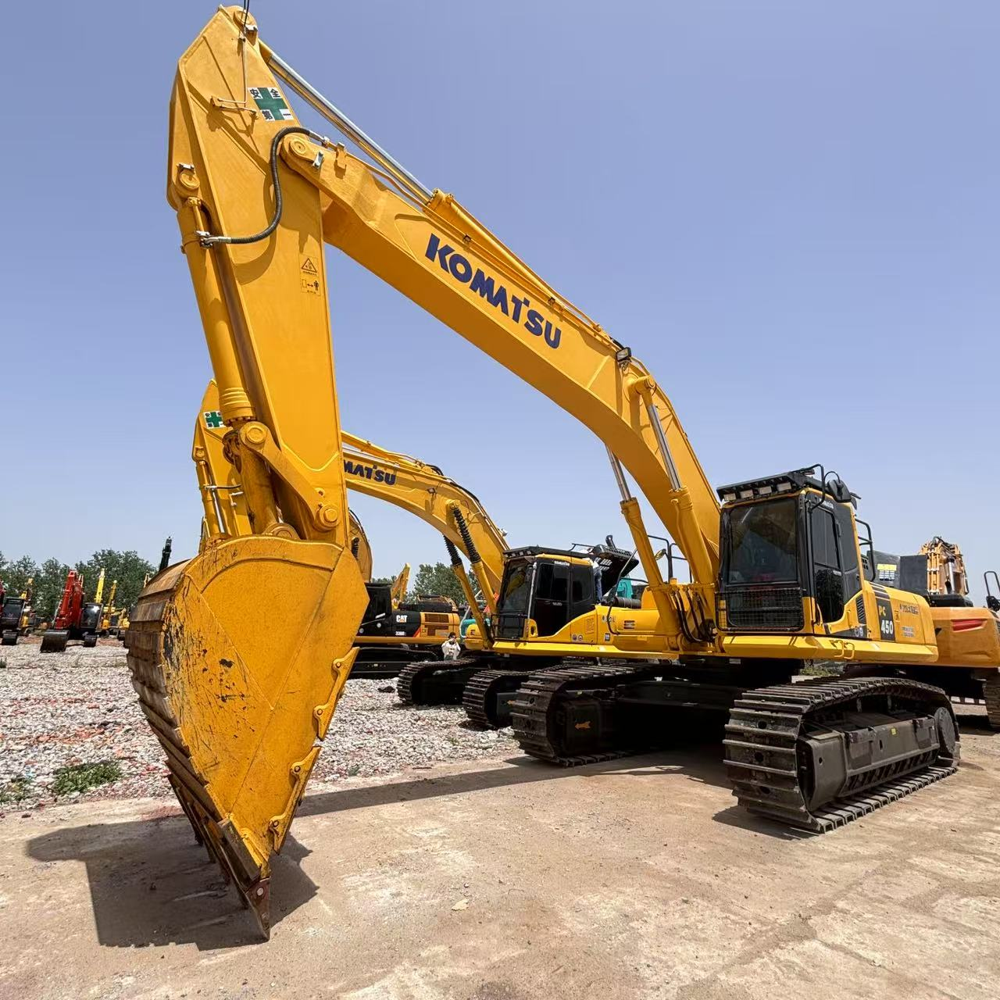

Refurbished Komatsu PC450 Excavator
The Komatsu PC450 Excavator is a high-performance, large-scale machine known for its strength, reliability, and versatility. Whether used in construction, mining, or heavy-duty earthmoving tasks, the PC450 stands out due to its robust design, powerful engine, and fuel efficiency. Opting for a refurbished Komatsu PC450 Excavator presents a smart choice for businesses looking to get excellent value at a lower price point while maintaining exceptional performance.
Honestly, it's almost impossible to buy a brand new excavator from China. They either don't exist or are made in China. If a Chinese seller tells you their Caterpillar/Komatsu/Volvo/Kobelco/Hitachi is brand new, they're lying. Therefore, a refurbished excavator is your best bet.

Here are the detailed specifications for a refurbished Komatsu PC450-7 or PC450-8 excavator:
Operating Weight and Dimensions
- Operating Weight: 43,000–45,000 kg
- Transport Length: ~12.1–12.3 meters
- Transport Width: ~3.4–3.5 meters
- Transport Height: ~3.6–3.8 meters
- Tail Swing Radius: ~3.8 meters
- Ground Clearance: ~500 mm
- Track Width: 600 mm standard
Engine and Powertrain
- Engine Model: Komatsu SAA6D125E-5 (Tier 2 or Tier 3 compliant)
- Rated Power Output: ~257–270 kW (345–362 hp) @ 1,950 rpm
- Maximum Torque: ~1,600–1,800 Nm
- Fuel Tank Capacity: ~650–700 liters
- Travel Speed: 3.0–5.0 km/h
- Swing Speed: ~9.0 rpm
- Gradeability: Up to 35°
Hydraulic System
- Main Pump Type: Variable displacement axial piston pumps
- Flow Rate: ~2 × 360–380 L/min
- System Pressure: Up to 34.3 MPa
- Hydraulic Oil Capacity: ~500 liters
- Control System: HydrauMind (Komatsu’s intelligent hydraulic control)
- Boom/Arm/Bucket Priority: Load-sensing with flow sharing
Performance Metrics
- Bucket Capacity: 1.9–2.6 m³ (SAE heaped)
- Max Digging Depth: ~7.8–8.2 meters
- Max Reach (Horizontal): ~12.0–12.5 meters
- Max Dump Height: ~7.5–7.8 meters
- Bucket Digging Force: ~240–260 kN
- Arm Digging Force: ~180–190 kN
Cab and Operator Features
- Cab Type: ROPS/FOPS certified
- Display: Komatsu multi-function monitor with diagnostics and fuel tracking
- Controls: Electro-hydraulic joysticks with customizable sensitivity
- Comfort: Air suspension seat, climate control, low vibration cab
- Visibility: Rear-view camera, wide glass area, LED work lights
Smart Features and Efficiency
- Fuel Efficiency:
- Auto idle and engine shutdown
- HydrauMind system optimizes flow and pressure
- Emissions Control:
- PC450-7: Tier 2 (no DPF/SCR)
- PC450-8: Tier 3 (EGR, no DPF/SCR)
- Telematics Ready: Komtrax system for remote diagnostics and fleet tracking
Attachments Compatibility
- Standard Bucket: 1.9–2.6 m³
- Optional Tools: Hydraulic breaker, demolition shear, compactor, ripper
- Quick Coupler: Hydraulic or manual options available
Refurbishment Scope
Refurbished PC450 units typically include:
- Engine Overhaul: Turbocharger, injectors, seals, cooling system
- Hydraulic Restoration: Pump recalibration, valve block testing, hose replacement
- Electrical Diagnostics: Monitor, sensors, wiring harness
- Cab Reconditioning: Seat, joysticks, HVAC, repainting
- Structural Repairs: Boom/bucket welding, bushing replacement, undercarriage rebuild
Overview of the Komatsu PC450 Excavator
The Komatsu PC450 is a high-powered hydraulic excavator that is typically used for large-scale excavation tasks, heavy lifting, and demanding earthmoving operations. Known for its durability, versatility, and powerful performance, it is one of the most reliable machines in its class. It is well-suited for applications that require both precision and strength.
Key Specifications of the Komatsu PC450
-
Operating Weight: Around 45,000 kg (99,208 lbs)
-
Engine Power: 260 kW (349 hp)
-
Max Digging Depth: Up to 7.2 meters (23.6 feet)
-
Max Reach: Approximately 10.8 meters (35.4 feet)
-
Bucket Capacity: Ranges from 1.8 to 2.5 cubic meters (63.6–88.3 cubic feet)
-
Fuel Tank Capacity: About 600 liters (158.5 gallons)
-
Travel Speed: Up to 5.3 km/h (3.3 mph)
The Komatsu PC450 is designed to excel in high-demand environments. Its large operating weight and high horsepower make it ideal for heavy-duty tasks like digging, lifting, and maneuvering through rough terrain, while its advanced hydraulics offer precise control for a variety of applications.
Engine Performance and Fuel Efficiency
One of the standout features of the Komatsu PC450 Excavator is its fuel-efficient engine that offers exceptional power while keeping fuel consumption under control. The PC450 is designed to optimize fuel usage without compromising on performance, making it ideal for contractors looking to keep operational costs in check.
-
Powerful Engine: Powered by a 349 hp engine, the Komatsu PC450 has the capability to handle large-scale earthmoving tasks with ease. This makes it a popular choice for contractors dealing with demanding excavation and mining applications.
-
Fuel Efficiency: The engine's design incorporates advanced technologies that enhance fuel efficiency, which can significantly reduce operating costs over the life of the machine. This is particularly valuable for long-term projects or high-use scenarios.
-
Environmental Compliance: The PC450 meets modern emissions standards, making it a more environmentally friendly option for those working in regulated or eco-sensitive areas.
Hydraulic System and Performance
The hydraulic system of the Komatsu PC450 Excavator is another area where this machine excels. Designed for both power and precision, the hydraulics in this model provide exceptional lifting power and digging force.
-
Hydraulic Efficiency: The PC450’s hydraulic system is known for its efficiency and smooth operation. Whether it's digging, lifting, or rotating, the hydraulics provide reliable power that helps maximize productivity.
-
Load-Sensing Hydraulics: The machine features load-sensing hydraulics that automatically adjust the flow of fluid based on the task at hand. This improves fuel efficiency while providing the necessary power for demanding tasks.
-
Attachment Compatibility: The PC450 can be outfitted with a wide range of attachments, from buckets and hammers to grapples and augers. This versatility enables it to handle multiple job types without requiring additional machines.
Durability and Build Quality
The Komatsu PC450 is built with durability in mind, featuring a heavy-duty undercarriage, strong frame, and reinforced components that can withstand the stress of tough construction and mining tasks.
-
Heavy-Duty Undercarriage: The undercarriage of the PC450 is designed for maximum stability and durability, making it ideal for use in challenging conditions such as rocky, muddy, or uneven terrain. It ensures excellent traction and minimizes wear, even on the most demanding job sites.
-
Reinforced Boom and Arm: The boom and arm are constructed from high-strength steel, ensuring the excavator can handle heavy lifting and digging operations without compromising structural integrity.
-
Reduced Maintenance: The PC450 is designed with longevity in mind, requiring less frequent maintenance compared to similar-sized excavators. With proper care and routine inspections, the machine can continue to provide reliable service for many years.
Operator Comfort and Safety Features
Komatsu places a strong emphasis on operator comfort and safety. The PC450 is equipped with an ergonomically designed cab that allows operators to work long hours with minimal fatigue, while safety features ensure a secure working environment.
-
Spacious, Comfortable Cab: The PC450 features a spacious operator cabin with air conditioning, an adjustable seat, and excellent visibility. This ergonomic design helps minimize operator fatigue, allowing for more productive work hours.
-
Enhanced Visibility: The cab is designed with large windows and minimal obstructions, providing excellent all-around visibility. This is crucial for maintaining awareness of the worksite and ensuring the safety of both the operator and nearby workers.
-
Safety Features: The PC450 is equipped with ROPS (Roll-Over Protective Structure) and FOPS (Falling Object Protective Structure), offering enhanced protection to the operator in the event of an accident.
Refurbished Komatsu PC450 Excavator: A Smart Investment
A refurbished Komatsu PC450 Excavator offers a significant cost-saving opportunity without sacrificing performance. Refurbished models undergo a detailed inspection, reconditioning, and replacement of worn-out parts, restoring them to near-new condition.
Benefits of a Refurbished Model:
-
Cost Savings: Refurbished excavators can cost up to 40-60% less than new models, making them an attractive option for businesses that need powerful equipment but have a limited budget.
-
High Performance: A refurbished PC450 is restored to factory standards, ensuring that it operates with the same level of performance as a new machine. With the necessary parts replaced and systems thoroughly tested, refurbished machines can provide many more years of service.
-
Warranty and After-Sales Support: Many refurbished PC450 models come with a warranty and offer comprehensive after-sales support. This ensures that businesses can continue to rely on the excavator for long-term operations with the peace of mind that any future issues will be addressed promptly.
Maintenance Tips for the Komatsu PC450
To maximize the longevity and performance of the Komatsu PC450, it is essential to follow proper maintenance practices:
-
Regular Engine Servicing: Ensure the engine oil is changed regularly and the air filters are kept clean to prevent debris from entering the engine.
-
Hydraulic System Checks: Monitor hydraulic fluid levels and check for leaks. Replacing hydraulic filters regularly will maintain smooth and efficient performance.
-
Undercarriage Inspections: Inspect the undercarriage for any signs of wear or damage. Proper maintenance of the tracks and rollers will extend the life of the machine.
-
Cab and Safety Features: Periodically inspect the cab, ensuring that all safety features such as the seat belts, ROPS, and FOPS are in working order.
Conclusion
The Komatsu PC450 Excavator is a powerhouse designed for demanding tasks. With its robust build, powerful engine, and efficient hydraulic system, it excels in heavy-duty earthmoving and construction projects. A refurbished Komatsu PC450 Excavator provides the same reliability and performance as a new model but at a fraction of the cost, making it a cost-effective choice for businesses looking for durable, high-performance machinery.
With proper maintenance, a refurbished PC450 can continue to deliver top-tier performance for years, making it a wise investment for any contractor or company in need of a high-quality excavator for large-scale projects.
Our Commitment
- 2 years / 4000 hours warranty.
- EPA certified.
- No sweatshop labor.
Contacts

- [email protected]
- Youtube Instagram Facebook
- Navigation: G206 (Sishu Bridge) in Changfeng County, Hefei City, Anhui Province, 200 meters north to the east